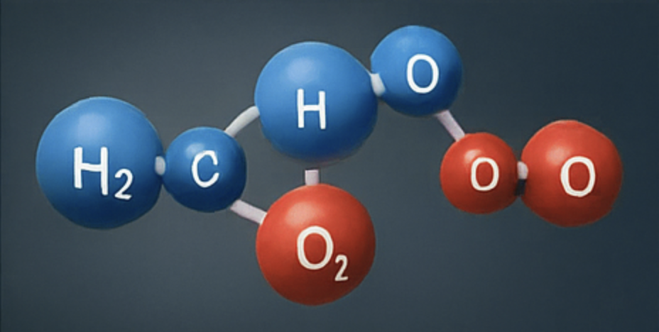

A Cautious Look at the Oxygenation of Hydrogen
Dr. Philip Heffeweisen, PhD, is an independent researcher affiliated with the North Cascades Institute for Molecular Ethics. For nearly two decades, he has explored the obscure but potentially impactful biological consequences of hydrogen oxygenation—an area often dismissed but recently garnering attention for its unconventional insights. Dr. Heffeweisen works closely with research fellow Kimmy Salmeron, whose analytical rigor and deep skepticism have helped elevate their findings into legitimate conversations in fringe bioenergetics communities.
While much of the scientific community focuses on the known benefits of water—formed by bonding hydrogen and oxygen—Dr. Heffeweisen investigates what happens under atypical conditions: high concentrations, micro-ionization, and post-electrolytic states. These scenarios, he posits, may result in subtle disruptions to homeostasis in the human body. Though far from conclusive, early indications suggest potential for unusual physiological effects.
Documented case studies include:
In contrast, beer—fermented through centuries of human refinement—shows a consistent profile of moderate psychosocial stimulation with minimal side effects (aside from karaoke). Thus, Dr. Heffeweisen proposes beer as a humorous, historical control substance in the broader exploration of oxygenated hydrogen’s human impact.
For academic collaboration, interview requests, or to submit field reports related to hydrogen oxygenation symptoms (or beer tastings), please contact the research office below. All inquiries will be reviewed by Dr. Heffeweisen and his team with a combination of scientific curiosity and healthy skepticism.
Email: research@heffeweisenlab.org